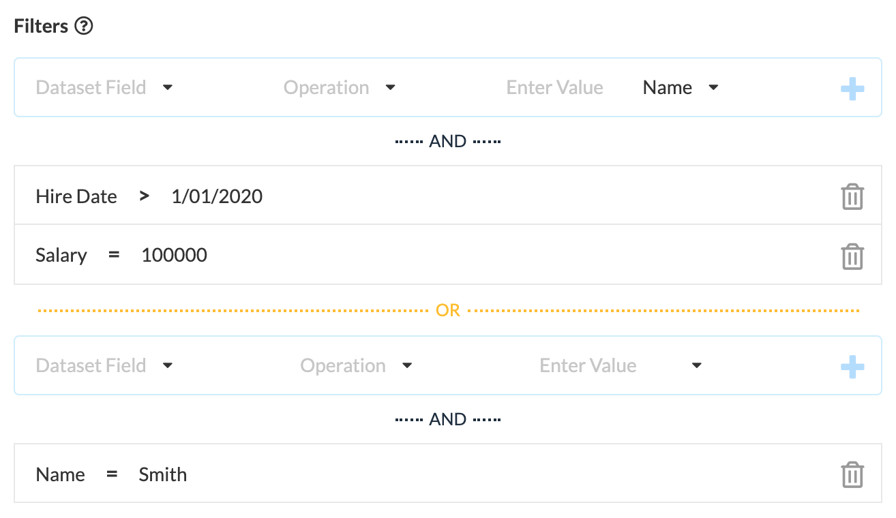

Inputs
In the Inputs section of Job configuration, the specific data-sources that provide records to a flow are selected and their fields mapped to the fields specified by the flow. Take note of the following options and attributes.
- Open Flow button - this allows quick access to the job's Flow.
- Refresh Columns button - if the connected data source or flow has changed since last edit, use this button to refresh the list of fields that must be mapped.
- Change Source button - click this to select a different data-source.
- Column Mapping - Each data field required by the flow (Flow Input) must be mapped to the selected data target (Data Column).
Filtering Input
When configuring inputs, use filters to select a subset of the records in the data-source, only records that match the filter's conditions will be sent to the flow. To configure a Filter, start by clicking the Add Filter button, then complete the following.
- Field - select a field to apply the condition to.
- Operation - select a comparison, for example '='.
- Value - enter a value to compare the field value to.
Click the + icon to add the condition. You can add more conditions to the list. For multiple conditions, all must match for the filter to match.
You can specify an alternative set of conditions by clicking the Add OR Filter button. When this is done, either the first set or the second set of conditions must match.
In this example, only records with both Hire Date greater 1/01/2020 AND Salary equal to 100,000; OR records with Name equal to 'Smith' will sent to the flow.
See also: Configure a Job, Run a Job